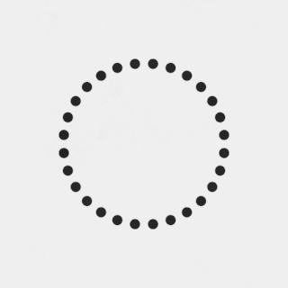

<ngx-spinner bdColor="#f0f0f0" size="medium" color="#fff" type="ball-scale-multiple">
  <p style="font-size: 20px; color: white">
    
    
  </p>
</ngx-spinner>

<!-- <div style="padding: 10px 0">
  <div>
      <label style="display: inline-block; width: 60px; color: #FFF">Start</label>
      <input type="text" [(ngModel)]="start" />
  </div>
  <div>
      <label style="display: inline-block; width: 60px; color: #FFF">Finish</label>
      <input type="text" [(ngModel)]="finish" />
  </div>
</div>-->


<router-outlet></router-outlet>
